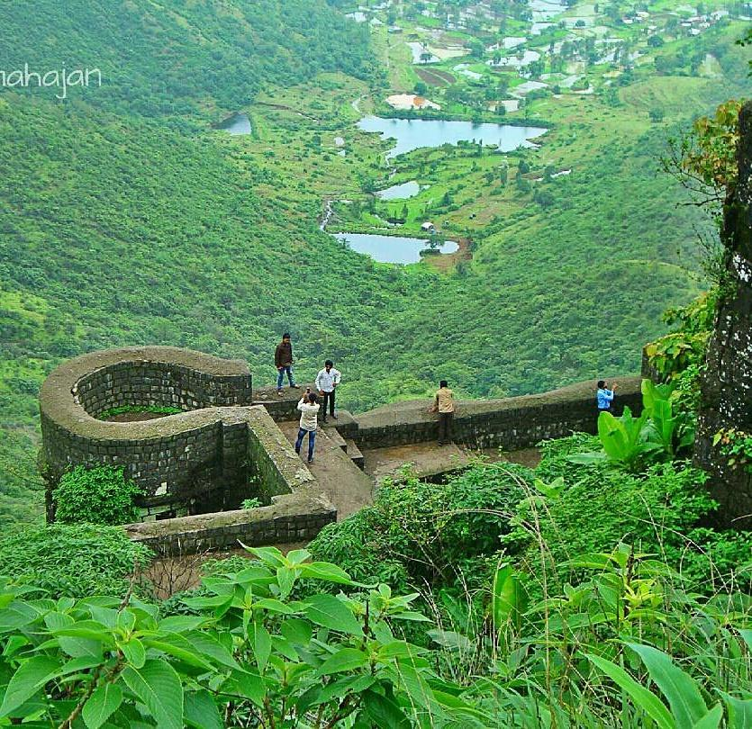

|Information :
Sinhagad Fort was earlier known as Kondana fort. It is Located near the Pune district in Maharashtra. The fort is also on the famous fort in Maharashtra which has a great history of Tanaji Malusare. The fort was captured by Tanaji Malusare and his brother. Sinhagad fort was strategically built to provide natural protection from the enemies due to its very steep slopes. The walls of the forts and bastions were constructed only at key places. There are two gates to enter the fort named Kalyan Darwaja and Pune Darwaza. The Kalyan Darwaja is towards the southeast while the Pune Darwaza is towards north east. This fort is also called as center fort of Maratha empire as it is surrounded by many forts beside. During the clear climate you can see Rajgad, Purandar and Torna forts from the Sinhagad killa.
One of the most famous battles on Sinhgad was fought by Tanaji Malusare, a general of Chhatrapati Shivaji of the Maratha Empire in order to recapture the fort on March 1670. The Kalyan Darwaja is towards the southeast while the Pune Darwaza is towards north east.The fort is surrounded by several other forts, and was known as the control center of the Maratha Empire. In clear weather, Rajgad, Purandar and Torna forts can be seen from the Sinhagad killa.
|History :
The fort has one of the interesting chapters in its history. The fort was renamed as Sinhagad earlier it was known as Kondana fort. During the era of Shivaji Maharaj this was one of the toughest forts to capture from mughal. During the fight one of the bravest soldiers lost his life while fighting on the fort. The warrior’s name was Tanaji Malusare. He instead of having his son’s marriage gave the first preference to go fulfill the task to capture the fort. He was also known as Lion “Sinha In Marathi” of Maratha emperor and to give him the treaty Shivaji Maharaj renamed this fort as Sinhagad. The famous line said by Shivaji Maharaj as ”गड आला पण सिंह गेला” is related to this fort which means we have captured the fort but we have lost our lion warrior.
The Sinhagad Fort was initially known as "Kondhana" after the sage Kaundinya. The Kaundinyeshwar temple coupled with the caves and carvings indicates that the fort had probably been built around two thousand years ago.The fort was captured by forces of Muhammad bin Tughluq in 1328 from Koli chieftain Nag Naik after a siege of eight months.It then became part of the Bahmani sultanate followed by the Nizam Shahi of Ahmadnagar in 1485. After the fall of Nizam shahi it came under the control of the Adilshahi in early late 1500s.
|Things to look out :
Raigad fort is a big tourist destination in Maharashtra that has an excellent combination of history and nature coexisting. Let’s look at what all visitors should look out for while going to see Maratha Empire’s Raigad Fort.
- Gates: The fort has two gates, Kalyan Darwaja and Pune Darwaja, which were strategically placed to provide security during attacks.
- Temples:The fort has a Kali temple, a Hanuman temple, and the Amruteshwar Temple, which has idols of Bhairav and Bhairavi..
- Memorials: The fort has a memorial of Tanaji and Rajaram's tomb.
- Other attractions: The fort has military stables, a brewery, ancient caves, and scenic views.
|Here are some of the things you can do at Sinhagad Fort: :
- Hike or trek to the top of the fort.
- Enjoy the panoramic views of the surrounding countryside.
- Visit the temples and other historical structures.
- Have a picnic lunch in the fort grounds.
- Learn about the history of the fort and the Battle of Sinhagad.
Sinhagad Fort is a must-visit for any traveler to Pune. It is a beautiful and historic fort that offers stunning views of the surrounding countryside.
|Near by Places :
Sinhagad Fort can never be complete without talking about other attractions that are neighbours to the Sinhagad Fort

- Khadakwasla Dam: This is a dam on the Mutha river. The dam created a reservoir named as Khadkakvasla lake which is the main source of water for Pune and its suburbs.
- Rajiv Gandhi Zoological Park:It is a well-maintained zoological park situated in the Pune district, with good collections of reptiles, mammals, and birds. Among mammals, the zoo has a white tiger and a male Bengal tiger. Other mammals at the zoo include leopard, sloth bears, sambhars, barking deer, blackbucks, monkeys, and elephants. Reptiles include snakes, vipers, Indian crocodiles and Indian star tortoise and birds such as peafowl also feature.
- Parvati Hill: A hillock and one of the most scenic locations in Pune. There is a temple in the top of the hill and is the oldest heritage structure in Pune and was built during the rule of the Peshwa dynasty. Parvati hill is also an observation point that offers a panoramic view of Pune. It is the second-highest point in Pune.
- Saras Baug:Saras Baug is a major landmark in the city of Pune. The place where the park now stands was once occupied by a small lake. However, the lake dried up and was later developed into Sarasbaug. there is a Ganesh temple located inside this.
- Dagdusheth Halwai Ganpati Temple: The temple is a beautiful construction and boasts a rich history of over 100 years. The Ganesh idol placed inside is 2.2 meters tall and 1 meter wide. and is adorned with nearly 40 kilos of gold.
- Lal Mahal:This is one of the most famous monuments in Pune. This was established by Shivaji Maharaj in the year 1630 AD. Maharaj stayed here for several years until he captured his first fort. The original Lal Mahal fell into ruins and the current Lal Mahal is a reconstruction of the original and located in the center of the Pune city.
- Shree Kasba Ganapati:Shree Kasba Ganapati refers to both a particular idol of the god Ganpati in Pune and as well as to the temple built around the idol. The Kasba Ganapati is the presiding deity,gramadevata0 of Pune.
- Chattushringi Mandir: One of the most famous temples in Pune, Chaturshringi Mountain is located on the top of a hill right on the Senapati Bapat Road. It is said to have been built during the reign of the Maratha king Chhatrapati Shivaji Raje Bhosle. The presiding deity of the temple is Goddess Chaturshringi, also known as Goddess Ambareshwari. To reach the main sanctum of the temple, tourists will have to climb approximately 100 stairs but the view of the hill that one gets from the top is worth all the efforts.
- Aga Khan Palace: The mighty edifice of Aga Khan Palace is situated in Pune and was built by Sultan Muhammed Shah Aga Khan III in the year 1892. It is one of the most important landmarks in Indian history and has been instrumental in many defining moments of India's independence. It was once the site where Mahatma Gandhi, his wife Kasturba Gandhi, as well as Sarojini Naidu and Mahadev Desai were held prisoners.
- Raigad Fort:The Raigad Fort is one of the major spots of tourism in Maharashtra. It is a hill fort that is based in the Raigad district of Maharashtra. Chhatrapati Shivaji has made this fort the capital of his empire in the year 1674. The fort is situated at 2700ft above the sea level. It is located in the Shayadri mountain range. There is a long stretch of nearly 1450 steps that leads to the fort.